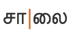
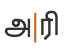
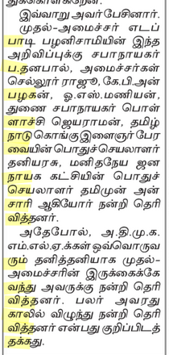
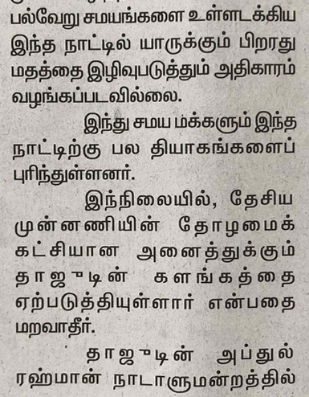
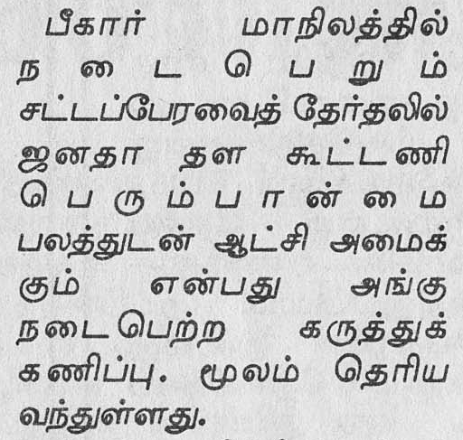
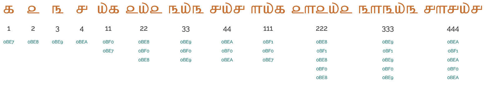

This document describes requirements for the layout and presentation of text in the Tamil language, using the Tamil script when they are used by Web standards and technologies, such as HTML, CSS, Mobile Web, Digital Publications, and Unicode.
This early draft has not yet been through any review process. Please do not rely on the contents.
This document describes the basic requirements layout and text support on the Web and in eBooks for the Tamil language, using the Tamil script. These requirements provide information for Web technologies such as CSS, HTML and digital publications about how to support users of Tamil scripts. Currently the document focuses on Tamil as used for the Tamil language. The information here is developed in conjunction with a document that summarises gaps in support on the Web for Tamil.
This document provides information about the Tamil script is used for the Tamil language.
This document should contain no reference to a particular technology. For example, it should not say "CSS does/doesn't do such and such", and it should not describe how a technology, such as CSS, should implement the requirements. It is technology agnostic, so that it will be evergreen, and it simply describes how the script works. The gap analysis document is the appropriate place for all kinds of technology-specific information.
Gap analysis
This document is pointed to by a separate document, Tamil Gap Analysis, which describes gaps in support for Tamil on the Web, and prioritises and describes the impact of those gaps on the user.
Wherever an unsupported feature is indentified through the gap analysis process, the requirements for that feature need to be documented. This document is where those requirements are described.
Other related resources
The document Language enablement index points to this document and others, and provides a central location for developers and implementers to find information related to various scripts.
The W3C also maintains a tracking system that has links to github issues in W3C repositories. There are separate links for (a) requests from developers to the user community for information about how scripts/languages work, (b) issues raised against a spec, and (c) browser bugs. For example, you can find out what information developers are currently seeking, and the resulting list can also be filtered by script.
The initial material for this document was an edited copy of part of the Tamil orthography description by the same author.
The Tamil script is an abugida, ie. consonants carry an inherent vowel sound that is overridden using vowel signs or killed using a virama.
The Tamil script is written horizontally, left to right.
Words are separated by spaces.
There are fewer consonants than in other Indic scripts. Tamil has no aspirated consonant letters, and symbols are allocated on a phonemic basis, rather than phonetic. This means that க, for example, may be pronounced as the allophones kɡxɣ or h, according to where it appears relative to other sounds in a word, but its pronunciation doesn't change the word.
The consonant letters used for pure Tamil words are supplemented by Grantha consonant signs which are used for English and Sanskrit loan words. Repertoire extensions for non-native sounds are achieved by applying the āytam diacritic to characters.
Consonant clusters are indicated using the visible puḷḷi dot (the virama) to indicate that no vowel follows a consonant. Exceptions to the rule are 2 ligated forms: க்ஷkʃʌ and ஶ்ரீʃri.
Word-initial clusters do not appear in Tamil. Syllable-/word-final consonants are just written using ordinary consonants with the puḷḷi overhead, eg.தமிழ் t̪amiɻ Tamil.
The Tamil orthography has an inherent vowel, and represents vowels using vowel signs, including pre-base glyphs and circumgraphs. All circumgraphs can be decomposed. All vowel signs are combining marks, and are stored after the base character.
There are also independent vowels, one for each vowel sound, including the inherent vowel, and these are used to write all standalone vowel sounds.
The only composite vowels are those created by decomposition of the circumgraphs, and involve 2 glyphs, one on each side of the base consonant(s).
Tamil is diglossic: the classic form is preferred for writing and public speaking, and is mostly standard across the Tamil-speaking regions; the colloquial, spoken form differs widely from the written.
There can also be differences in letter shapes and other typographic approaches between the Tamil used in India and that used in places like Singapore and Malaysia (and even Sri Lanka).
The script has no upper-/lowercase distinction.
Text direction
Tamil is written horizontally, left to right.
In rare cases, Tamil text may be displayed in a vertical arrangement with upright glyphs. In such cases, words should be broken at grapheme cluster boundaries, rather than after each code point, because Tamil doesn't have the conjunct forms that are common in north Indian scripts.
Glyph shaping & positioning
Tamil printed text is not cursive, and has no special requirements for baseline alignment between mixed scripts or in general.
The orthography has no case distinction, and no special transforms are needed to convert between characters.
Font styles
In 1978, in an attempt to simplify the script, the government of Tamil Nadu proposed the reform of certain letters and syllables. See [[[#fig_1978_reform]]] for a list of changes that were adopted. In all cases this is just a font change, rather than a change to the underlying code points.
Proposed reforms of 1978m.
The fonts used in this page use the new forms.
Two more proposed changes, which would have changed the code points used, have not been widely adopted: அய் [U+0B85 TAMIL LETTER A + U+0BAF TAMIL LETTER YA + U+0BCD TAMIL SIGN VIRAMA] for ஐ [U+0B90 TAMIL LETTER AI]; and அவ் [U+0B85 TAMIL LETTER A + U+0BB5 TAMIL LETTER VA + U+0BCD TAMIL SIGN VIRAMA] for ஔ [U+0B94 TAMIL LETTER AU].
Context-based shaping & positioning
Although modern Tamil uses fewer conjunct ligatures than most other indic scripts, many ligatures are still needed for a Tamil font, mostly for combinations of base consonant and vowel-sign.
Vowel ligatures
Vowel-signs for u and uː, and to some extent i and i:, produce significantly different, ligated shapes as they combine with the base consonant. The figure below shows the various alternative shapes produced by ு [U+0BC1 TAMIL VOWEL SIGN U] when combined with different base characters.
Base consonant
Combination
க
கு
ச
சு
ஞ
ஞு
ட
டு
ஜ
ஜு
Ligatures with ு [U+0BC1 TAMIL VOWEL SIGN U].
Besides these significant transformations, special shaping is used to ensure a clean join between the consonant and vowel, eg. லிli. In the following sequence the vowel-sign is stretched slightly to fit the shape of the consonant.ஷிʂi
In certain contexts or fonts,
ர [U+0BB0 TAMIL LETTER RA]
may look identical to
ா [U+0BBE TAMIL VOWEL SIGN AA], or it may have a short tail in others. These letters looked the same in old manuscripts, especially palm leaves, and in early printed materials. The stroke was introduced to differentiate the two, but only if it didn't have a vowel-sign or pulli attached, so ரா, ரெ, ரோ, etc. carried a stroke, but not ர், ரி and ரீ. This approach is still followed, particularly in India, but in Malaysia and Singapore, there is a government regulation requiring the use of the form with a bottom stroke in all contexts. People are comfortable with both forms and will hardly notice the difference.
[[[#fig_ra_variants]]] shows a text that distinguishes between the two variant glyphs. Compare the items circled in red. The orange circle indicates a vowel-sign that would be ambiguous if one was not expecting a tail for the consonant.
Tamil consonants tend to all be the same height, and so the vertical positioning of the pulli tends to be the same. Apart from the vowel-signs and pulli, Tamil doesn't really have combining characters.
Font styling & weight
Italics and bold are not traditional features of Tamil text.
Some fonts have upright glyphs, whereas others have slightly slanted glyphs.
Graphemes
A grapheme is a user-perceived unit of text. Text operations that use graphemes as a unit of text include line-breaking, forwards deletion, cursor movement & selection, character counts, text spacing, text insertion, justification, case conversions, and sorting. The Unicode Standard uses generalised rules to define ‘grapheme clusters’, which approximate the likely grapheme boundaries in a writing system, however they don't work well with many complex scripts.
The term orthographic syllable is not clearly defined in the Unicode Standard. In the orthography notes on this site we define it to mean a typographic unit that includes more than one grapheme cluster. This is commonly the case for Brahmi-derived scripts, such as for Devanagari conjuncts, or Balinese stacks. Orthographic syllables do not correspond to phonetic syllables.
Grapheme clusters can be used most of the time to segment Tamil words. However, in modern Tamil, 3 character sequences form conjuncts which should not be broken during edit operations such as letter-spacing, first-letter highlighting, and in-word line breaking. For those operations one needs to segment the text using orthographic syllables, which string grapheme clusters together with ் [U+0BCD TAMIL SIGN VIRAMA],
which has an Indic Syllabic Category of Virama.
Since there is only one Tamil virama, modern Tamil needs to interpret the virama (pulli) in two different ways for segmentation: (1) as a simple vowel-killer, and (2) as a conjunct initiator.
Tamil also segments text in a third way for justification.
Grapheme clusters
Base Combining_mark*
Combining marks may include one of the following types of character.
Combining marks may occur after a consonant base. There is usually only one vowel-sign component per base consonant; however, in decomposed text, circumgraphs are represented by 2 combining characters.
The following examples show a variety of grapheme clusters:

சாலைsɑːl̪əɪ̯road, street

அரிarito cut
அங்கேʔəŋɡeːthere
அஞ்ஞானம்əɲɲɑːnəmfineness
உலர்ந்தம்ʔʊl̪əɾ̪n̪d̪əmstalk (bot.)
In Tamil the aytham, ஃ [U+0B83 TAMIL SIGN VISARGA], has the general category of Other_Letter and Indic syllabic category of Modifying_Letter. It is it's own typographic unit.
Larger typographic units
(Consonant Pulli)* Grapheme_cluster
Because a virama (with the exceptions described below) is a visible vowel-killer and doesn't create conjunct forms, it can usually be treated as just another combining mark and segmentation can break after it.
However, modern Tamil uses conjunct forms for two sound sequences (though this can be written using 3 code point sequences). The sequences are க்ஷkṣa, and ஶ்ரீśrī or ஸ்ரீsrī (the latter two being alternate ways of writing the same sound). These sequences should not be broken during segmentation. Note, that the 'shri' sequence must include the i vowel to produce a conjunct. With a different vowel, the sequence of characters is displayed using a visual pulli, eg. இஶ்ரேல்iśrēlIsrael
Editorial operations that change the visual appearance of the text, such as letter-spacing, first-letter highlighting, in-word line-breaking, and justification, should never split conjunct forms apart. For this reason, an alternative way of segmenting graphemes is needed. This may not apply, however, for some other operations such as cursor movement or backwards delete.
Where conjuncts appear, a typographic unit contains multiple grapheme clusters. The non-final grapheme clusters all end with ் [U+0BCD TAMIL SIGN VIRAMA], and the final grapheme cluster begins with a consonant. However, as mentioned, this only applies for 3 character sequences in modern Tamil.
This difference in segmentation arises from a reinterpretation of the effect of the virama – no special, alternative virama character is available. So this behaviour needs to be triggered by special rules.
The following are examples.
லக்ஷம்l̪əkʂəmlakh (100,000)
க்ஷீணம்kʂiːɳəmdecay, weakness
ஶ்ரீsɾ̪iːLakshmi, title for deities
Treatment as conjuncts rather than grapheme clusters can also affect vowel-sign positioning. An illustration of this can be seen when a consonant cluster is associated with a vowel-sign component that is displayed to the left of the base. For example, observe the placement of the pre-base vowel in [[[#fig_virama_seg]]]. In the conjunct form on the left, the vowel-sign surrounds the whole conjunct. If the sequence is not rendered as a conjunct, as in the second example, the pre-base glyph precedes the SA, not the KA.
Placement of pre-base vowel glyphs.
Glyph-based typographic units
When Tamil is justified, space is added around graphemes, but in many cases it is also added within grapheme clusters. The code point sequences are not affected, though. See [[[#justification]]].
Tamil glyph separation. The vowel-signs are coloured, and on the top line the grapheme-cluster boundaries are shown with thin vertical lines. The first vowel-sign is a circumgraph (ie. a single code point that renders glyphs on more than one side of the base). The bottom line shows how this word would be expanded to fill a line.
Structural boundaries & markers
Word boundaries
The concept of 'word' is difficult to define in any language (see What is a word?). Here, a word is a vaguely-defined, but recognisable semantic unit that is typically smaller than a phrase and may comprise one or more syllables.
Words are separated by spaces. Tamil words are often quite long because they bind together multiple morphemes.
Tamil texts use quotation marks around quotations. Of course, due to keyboard design, quotations may also be surrounded by ASCII double and single quote marks.
The default quote marks for Tamil should be “ [U+201C LEFT DOUBLE QUOTATION MARK] at the start, and ” [U+201D RIGHT DOUBLE QUOTATION MARK] at the end.
When an additional quote is embedded within the first, the quote marks should be
‘ [U+2018 LEFT SINGLE QUOTATION MARK]
and
’ [U+2019 RIGHT SINGLE QUOTATION MARK].
Emphasis
Underlining is not a traditional feature of Tamil text.
One way to express emphasis is to elongate vowel sounds using extra independent vowels, eg. compare
பெரீயperīyareally big
and
பெரீஇஇயperīiiyareeeeally big.
Line & paragraph layout
Line breaking & hyphenation
The primary break points for Tamil are word boundaries, however Tamil is an agglutinative language and Tamil words can be long. This can lead to large gaps during justification, and sometimes words that are longer than the available column width, so it is desirable to also hyphenate words.
Hyphenation
Because of the length of Tamil words, hyphenation is useful during layout, but it isn't easy to do because of the complexity of Tamil words.
Hyphenation must take place at syllable boundaries. A hyphen is not usually added at the end of the line when a word is hyphenated.

Text from the Tamil newpaper, Daily Thanthi, showing hyphenated words with yellow highlighting.
Prabhakar proposes rules that single characters should be avoided at line start/end, especially characters with nukta at line start, and a word with 5 characters including 3 consecutive consonants can't be split. He says that due to the fact that Tamil is highly inflexional, morphological or pattern based approaches are needed, rather than simple dictionary lookup.
Line-edge rules
As in almost all writing systems, certain punctuation characters should not appear at the end or the start of a line. The Unicode line-break properties help applications decide whether a character should appear at the start or end of a line.
The following list gives examples of typical behaviours for some of the characters used in modern Tamil. Context may affect the behaviour of some of these and other characters.
“ ‘ ( should not be the last character on a line.
” ’ ) . , ; ! ? । ॥ % should not begin a new line.
௹ ₹ should be kept with any number, even if separated by a space or parenthesis.
Line breaking should not move a danda or double danda to the beginning of a new line, even if they are preceded by a space character.
Text alignment & justification
Justification
Tamil usually adjusts inter-word spacing in order to justify text on a line, however there are situations where words are stretched, too. In those cases, some special rules apply.
Justification can be helped significantly by hyphenating the text (see hyphenation).
Especially in narrow columns of text where text is not hyphenated, large empty spaces can appear if only one or a small number of words will fit on a line.
A narrow column in newsprint with large gaps between justified words on a line.
On a line with few words and large inter-word spacing, justification can be improved by adjusting the width of the words themselves on the affected lines. [[[#fig_justification_in_newsprint]]] shows examples of inter-character space being compacted and stretched to minimise inter-word gaps.

Newspaper clipping showing inter-character compaction and stretching.
If only a single word fits on a line, it is common practise to stretch the word so that it fills the line, eg. the word பெரும்பான்மைperumpāṉmaimajority in [[[#fig_justification_one_word]]].

Examples of a single word stretched to fill a line.
However, it is important to note that, for Tamil, any stretching is applied evenly between each non-connected glyph across the line, regardless of whether the separated glyphs are part of a syllabic cluster, or even a single code point. This is not inter-character spacing, but rather inter-glyph spacing. The spacing doesn't occur between glyphs or code points that are ligated (touching), nor between a non-spacing mark and its base.
[[[#fig_partridge]]] illustrates how this stretching is based on glyphs, and is independent of the underlying code points.
Tamil glyph separation. The vowel-signs are coloured, and on the top line the grapheme-cluster boundaries are shown with thin vertical lines. The first vowel-sign is a circumgraph (ie. a single code point that renders glyphs on more than one side of the base). The bottom line shows how this word would be expanded to fill a line.
Note the following:
The sequence of three items on the far left is actually composed of only two code points, க [U+0B95 TAMIL LETTER KA] followed by the circumgraph ௌ [U+0BCC TAMIL VOWEL SIGN AU]. Notice that there are spaces between the base consonant and both glyphs that make up the vowel-sign.
To its immediate right, the base character and combining mark that make up the middle syllable have been split apart, so the units are codepoints rather than grapheme clusters.
The last grapheme cluster (on the right) is kept intact, because the vowel-sign is joined to the base consonant.
Examples of other consonant-vowel combinations that are not separated include ஜுʤu and non-spacing marks such as pulli, eg.
ங்n.
Where the word being stretched across a whole line is the last word in the sentence, the sentence-final punctuation also participates in the letter-spacing (see [[[#fig_justification_full_stop]]]).
Full stop participating in the letter-spacing when a single word is stretched to fill a line.
Paragraph indents
Paragraph features are the same as in English. Paragraphs can start with or without indents.
Baselines, line height, etc.
Tamil uses the so-called 'alphabetic' baseline, which is the same as for Latin and many other scripts.
To give an approximate idea, [[[#fig_baselines]]] compares Latin and Tamil glyphs from Noto Serif fonts. The basic height of Tamil letters is the same as the Latin x-height, however extenders extend slightly beyond the Latin ascenders and descenders, creating a need for slightly larger line heights.
Font metrics for Latin text compared with Tamil glyphs in the Noto Serif Tamil (top) and Noto Sans Tamil (bottom) fonts.
[[[#fig_baselines_other]]] shows similar comparisons for the Tamil MN and Latha fonts. The basic height of the Latha font is set to the Latin ascender height, but the overall height of the Tamil glyphs is not much taller than the other fonts.
Latin font metrics compared with Tamil glyphs in the Tamil MN (top) and Latha (bottom) fonts.
Counters
Counters are used to number lists, chapter headings, etc.
Tamil commonly uses western numbering systems for lists, however, Tamil also has a native numeric style and an archaic additive style.
Patterns for using these styles in CSS can be found in Ready-made Counter Styles, and we use the names of those patterns here to refer to the various styles.
Numeric counter styles
Tamil uses a numeric counter style, based on the decimal model, and using the standard Tamil digits, '௦' '௧' '௨' '௩' '௪' '௫' '௬' '௭' '௮' '௯' in a decimal pattern.
Examples of counter values using the Tamil numeric counter style.

Examples of counter values using the Tamil alphabetic counter style.
Styling initials
It is possible to find the first letter in a paragraph styled in a distinctive way – usually larger and dropping down from the top of the first line. Some rules for positioning south Indian scripts are proposed by [ilreq].
Initials should not just include the first character on the line, but should include any associated combining characters.
If the first character is the beginning of the sequences
க்ஷkʃʌ,
and
ஶ்ரீʃri /
ஸ்ரீʃri,
all of the characters making up the conjunct should be included in the styling.
Any paragraph-initial punctuation such as opening quotes and opening parentheses should also be included in the initial styling.
Sunken and raised styles are not used by South Asian languages [ilreq]. Indian languages generally use the drop style or a boxed letter. Contour-filling is also not needed for Indian text [ilreq].
Two example paragraphs showing dropped highlighted initials.
For the drop style, the alphabetic baseline of the highlighted letter(s) should match the bottom of the row that determines the size of the highlighted letter(s). In box examples in [[[#fig_drop_caps]]] the highlighted text is set to 3 lines in height. If the highlighted text descends below the baseline, an extra line is cleared to accommodate it. Tall vowel-signs rise slightly higher than the normal character height, and slightly exceed the height of the first line of text.
The exact positioning of the normal character height relative to the characters in the rest of the first line needs further research. The examples in [[[#fig_drop_caps]]] show the default result for the Safari browser.
For the raised style of initial, the highlighted characters sit on the same baseline as the first line of the paragraph, but rise above it (see [[[#fig_raised_initial]]]). The inter-line spacing needs to accommodate any descenders.
Example of a raised highlighted initial.
Another common approach in Indic text is to create a box around the enlarged letter(s), often with a background colour. In this case the box dimensions are associated with the other lines in the paragraph, and the highlighted letters float within the box.
Acknowledgements
The initial content of this document was created from parts of this page.
Special thanks to the following people who contributed to this document (contributors' names listed in in alphabetic order).